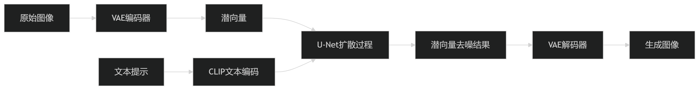
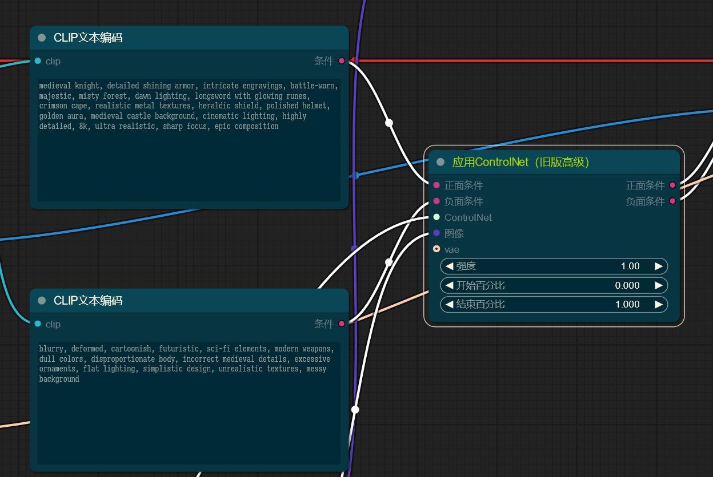
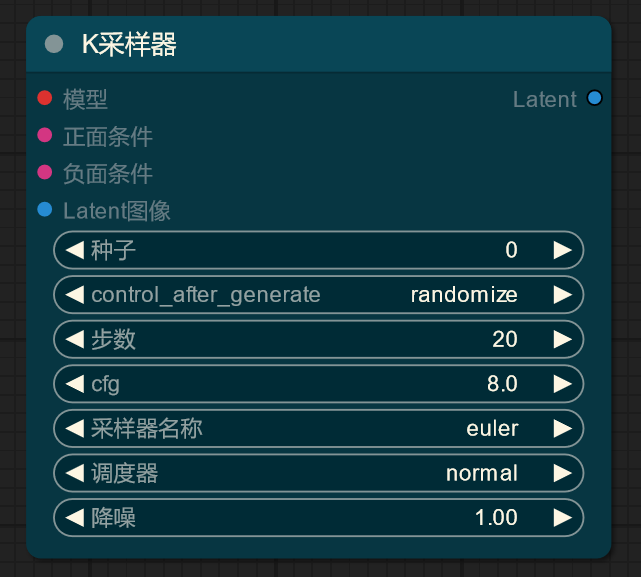

ComfyUI 学习 02——SD 的原理
这里还是把基本流程以及 SD 的原理学习一下，因为 ComfyUI 里这个东西不再是黑箱了，必须得理解这些东西才能继续下去。
SD 的训练过程
在一切开始之前，需要从使用者的角度理解 SD 的工作原理。这里从 SD 的训练步骤开始理解，因为我觉得这是比较有必要的，其中很多步骤和推理是共通的。

1. 得到图像和标签的潜空间表示
在训练 SD 模型前，要准备数据集，数据集是指定大小的图像以及对该图像的文字描述（tag），图像的一个典型尺寸是 512x512（SD1.5）。
VAE
首先，数据集中的图像会被转换为一个更小的潜在表示 Latent Representation，这个潜在表示包含了图像的语义信息，比如位置，轮廓，结构，颜色，纹理等，使得能够从潜在表示中重构出和原图像类似的图像。潜在表示可能是 32x32 或 64x64 等尺寸，远比原图像（如 512x512）紧凑，更容易进行处理。实际上，SD 利用的是这里的潜在表示去进行的训练。
进行图像到潜在表示的转换工作的是 VAE（Variational Autoencoder，变分自编码器），它也是基于深度学习的，但这里不研究它，这里只需要明确，VAE 和文本描述是无关的，VAE 只关心图像本身。图像到潜空间（潜在表示）的步骤称为编码 Encode，从潜在表示到图像的步骤称为解码 Decode，这些步骤中文本不会参与。
那问题来了——为何 SD 模型能够更换 VAE 呢？既然 SD 模型是基于特定的 VAE 生成的潜在表示去进行训练的，为何我能够在推理时更换使用的 VAE？这是因为，这同样也证明，不同 VAE 生成的潜在表示之间是有一定的兼容性的，即它们的结构相同，且压缩原图像的语义信息的方式是一致的，只有细节上的不同，这也就是说，这个 VAE 编码的潜在表示，很可能可以被另一个 VAE 解码。
虽然这么说，但这种兼容性好像也是有限的——对一张图像，使用一个 VAE 模型（如 taesd）进行编码，使用另一个 VAE 模型（如 taesdxl）进行解码，效果会变得很差。或许只能说，同一个 SD 版本兼容的 VAE 是可互换的。
CLIP
然后，数据集中的文本会被转换成一种潜在表示，这个向量并非是像文本嵌入那样，仅涵盖文字的语义信息，而是同时包含文字对应的实际物体的相关图像语义信息。文本是利用 CLIP 模型去进行转换的，CLIP 模型是双模态的——它把图像和文本映射到同一个潜空间中，从而让内容相似的文本和图像彼此靠近。把这个阶段称为 CLIP 文本编码。使用 CLIP 模型而非文本嵌入模型，是因为后者的潜空间不带图像语义信息，SD 难以去建立文本潜空间和图像潜空间的映射。
CLIP 模型的双模态也让 CLIP 能支持图像-文本的零样本分类——给定图像和一系列标签，检查哪些标签匹配该图像，或者给定标签和一系列图像，检查哪些图像满足该标签；自然，以 CLIP 模型为基础来进行分类图像、文本也是可以的。
那同样的问题，为何 SD 模型能够更换 CLIP 模型呢？答案和 VAE 也是一样的，不同 CLIP 模型的输出也是互相兼容的，标准化的，但 CLIP 模型估计也是局限于特定 SD 版本的。
ControlNet 为何接受 CLIP 作为输入
一个有趣的事是，在 ComfyUI 中，ControlNet 接受的是 CONDITIONING 类型（如 CLIP 文本编码，或者其他 ControlNet 的输出），输出的也是 CONDITIONING 类型；要应用上 ControlNet，只需将 ControlNet 节点置于 CLIP 文本编码器和 K 采样器之间：

这会给人一种感觉，好像就是 ControlNet 节点增强了正向、反向提示词，但这个理解是错误的，应该理解做，ComfyUI 中的 CONDITIONING 类型带有比单纯的提示词（或者说 CLIP 文本编码）更丰富的描述信息，这个描述信息甚至支持调整生成过程（比如 ControlNet 在何时开始作用，何时不再作用）；CLIP 文本编码器向这个 CONDITIONING 中添加文本描述，而 ControlNet 并未修改 CONDITIONING 中包含的提示词相关信息，而是在其中增加了自己的控制信息，该控制信息通过一个参考图像进行获得；这实际上也是说，ComfyUI 原生支持 ControlNet，而在 WebUI 中 ControlNet 必须要以插件的形式，修改原生成逻辑。
2. 训练 UNet
上面的步骤得到了文本描述和图像的潜在表示，接下来的训练的目的就是让 SD 模型掌握从文本描述到图像的映射的能力。这一步训练的实际上是所谓的 UNet 模型。
当我们说到 SD 模型的时候，我们实际说的是这里的 UNet 模型，以及和它相兼容的 CLIP、VAE 模型。
在每轮训练中：
- 对每个图像的潜在表示，给它添加一个随机步数的噪声，这就像尝试污染这张图像。
- 把污染后的潜在表示，当前污染的步数，图像对应的文本的潜在表示输入 UNet 模型
- UNet 模型猜测出污染过程中添加的噪声
- 根据猜测的噪声和实际添加的噪声去更新 UNet 模型的权重（损失函数，反向传播）
这里或许会带来混淆——UNet 模型究竟猜测的是这一步添加的噪声，还是这些步骤添加的噪声的总和？两种想法可以说是等价的——添加噪声的数学方法支持将某步添加的噪声和这些步骤添加的噪声互相转换。这里要做的就是接受这一点然后不要问太多以避免脑袋超载。
在训练后，SD 能够理解不同程度的污染阶段下数据的特征，以及各种污染程度下文本特征和图像污染模式的关系。
从训练到推理
从训练过程，我们能够反推推理过程——对训练后的 SD 模型，只需要给定一张完全噪声的图片的潜入表示，以及最大的污染步数和想要的文本描述的潜入表示，SD 就能够逐步地去除噪声，最后生成符合相应描述的图片的潜入表示，该潜入表示需要喂给 VAE 去解码才能得到结果图片。
为何 SD 模型推理时是逐步地去除噪声而非一口气走完？这让生成过程更加可控，而且避免引入一些可能的精度等问题。但推理的逐步并不等于添加噪声的逐步，比如添加噪声一般是 1000 步，推理可能是 20 步。
现在又要提出一个问题，ControlNet 是如何影响推理过程的？可以认为 ControlNet 为 UNet 模型新增加一层，按照参考图像调整原 UNet 预测的噪声，从而参与进图像生成的步骤中。
一个可能有些超纲的地方是，ControlNet 模型训练时要拷贝 UNet 模型进行训练，但配置使得训练时只调整自己的权重；这样 ControlNet 就能够作为一个“附加层”置于 UNet 阶段之后（好像严格来说不是这样的，但就这么说吧……）。这要求 ControlNet 需要适配 UNet 模型的格式，这也是为什么 ControlNet 模型要限定使用的 SD 版本。
这时候仍旧要再提出那个问题——ControlNet 既然是基于一个特定版本的 UNet 模型的，那我换成微调过的 SD 模型后还能用吗？实际上是能用的，只不过效果会有差异——再微调，又能改变多少权重呢？
采样器和调度器
接下来看看实际推理时的 K 采样器的诸参数，注意到这些参数都没有在上面的心智模型中出现，这里需要学习一下。

观察 K 采样器，注意到有所谓的采样器，调度器。
首先是采样器，为何要引入采样器？因为 SD 模型的生成噪声的步数是很大的，可能是 1000 步，使用相同的步数进行降噪在性能上是无法忍受的，采样器引入的目的就是为了降低生成图像时的迭代步数，在速度和质量上得到权衡。使用采样器让我们能三步并作两步，使用 20 步等可以接受的步数进行生成。
调度器和采样器则是协同使用的，调度器控制每一步噪声减少的方式，比如是均匀降低还是先降低快，后降低慢，这里不细究。
显然采样器、调度器的不同会让我们最终得到不同的结果，实践时选择合适的参数是必要的。
本博客所有文章除特别声明外，均采用 CC BY-NC-SA 4.0 协议 ，转载请注明出处！